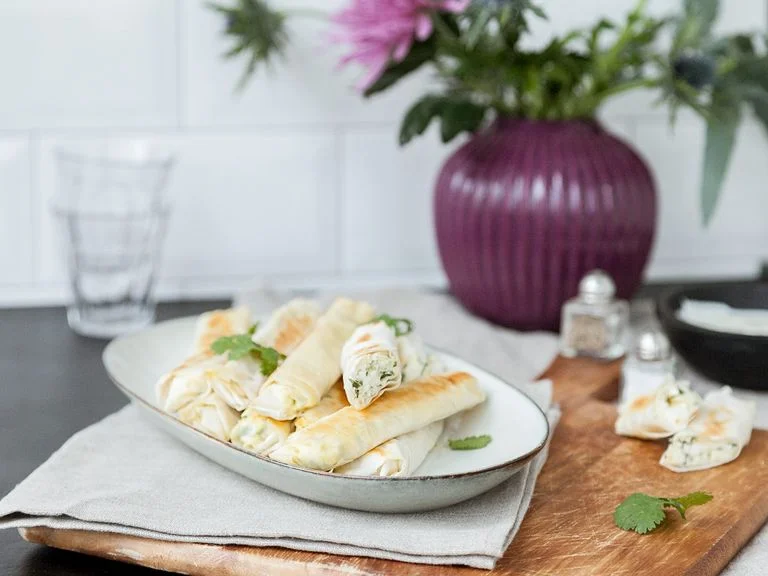

Turkish Cheese Rolls

Description
The following is a simple recipe for how to make delicious Turkish cheese rolls in approximately 20 minutes!
Ingredients
We will need the following ingredients for 12 servings (rolls):
- 400g sheep's cheese
- 30g parsley
- 2 eggs
- 12 sheets phyllo dough
- salt
- pepper
- vegetable oil for frying
Steps
- Finely chop parsley and set aside. Crumble sheep's cheese with your hands and add to a bowl. Add parsley and eggs. Season with salt and pepper to taste and stir to combine.
- Place the filling on the lower third of a sheet of phyllo dough and yroll up tightly. Dampen the phyllo dough with some water to make it sticky and seal the filling inside.
- Heat vegetable oil in a frying pan and fry cheese rolls from all sides for approx. 4 - 5 min. until crispy and golden brown. Let dry on paper towels and serve warm or cold. Enjoy!
Main page